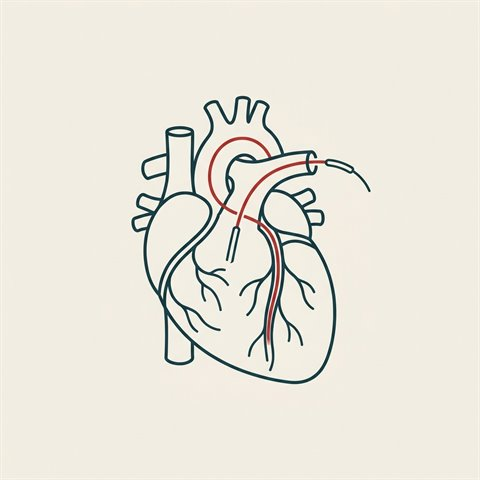

台北台安醫院心臟內科主治醫師。長期把 ACC／AHA／ESC 等國際會議與最新指南的心臟醫學重點，拆解、翻譯、整理成準確又好讀的繁體中文——給同行，也給每一位想懂自己心臟的人。

檢查介紹適應症、流程、住院幾天、傷口大小、風險與術後照護。
閱讀 → 治療介紹
治療介紹為什麼放支架、裸金屬／塗藥／可吸收怎麼選、術後吃藥與照護。
閱讀 → 危險因子
危險因子血壓分類、為何是「沉默的殺手」、你能做到的八大生活型態改變。
閱讀 → 危險因子
危險因子LDL／HDL／三酸甘油酯、血脂參考數值，以及如何控制。
閱讀 → 危險因子
危險因子為何大幅提高心臟病與中風風險，以及 ABC 控制重點。
閱讀 → 疾病
疾病三種類型、F.A.S.T. 辨識、為何分秒必爭、風險與預防。
閱讀 → 疾病
疾病中風風險約 5 倍、診斷，以及抗凝／心率／節律三方向治療。
閱讀 → 預防保健
預防保健Life's Essential 8：四項健康行為＋四項健康因子。
閱讀 →從 late-breaking 臨床試驗、最新指南，到日常的心血管衛教——我把專業的內容拆解、翻譯、整理成有條理又準確的筆記。所有數據都標註來源，不加入額外推論。